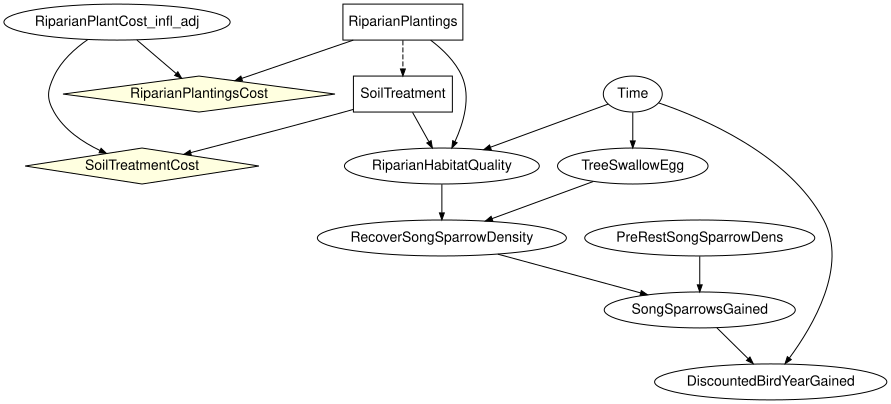
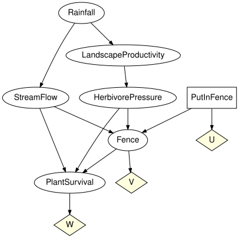
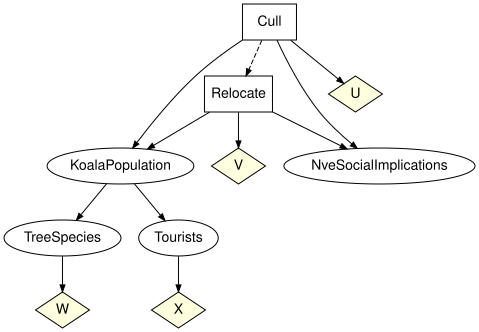

A real decision network from the zoo
Simon Frost
- Overview
- Setup
- Structure
- Finding nodes without tables
- Repairing the network and solving it
- Waterhole Fence: a solved decision network
- Koalas: two decisions in sequence
- Summary
- References
Overview
The BNMA repository (BNMA 2026) publishes Bayesian decision networks built for real restoration programmes. This vignette takes the Song Sparrow riparian-restoration network of Kotalik et al. (2026) apart with the zoo’s loaders, explains why it loads but cannot be solved as shipped (two Netica finding nodes carry no tables), repairs it with two explicitly stated assumptions and solves it - which turns out to say as much about the network’s objective as about restoration - and then solves two fully tabled decision networks from the same repository, Waterhole Fence and Koalas, with both decision backends.
Setup
using EcologicalBayesianNetworks
using InfluenceDiagrams
spec = model_info("song_sparrow_bdn")
println(spec.citation)
spec.doi, spec.licence, spec.redistributionKotalik, C. J., Rowland, F. E., Marcot, B. G., Skrabis, K., Walters, D. M., Hinck, J. E., Clements, W., Richer, E. and Isanhart, J. (2026). Causal networks to inform decisions for ecological restoration. Environmental Management 76(7).
("10.59381/ofwegrfqyo", "CC-BY (version unstated)", "verbatim")The file is the original .dne served by BNMA, committed verbatim under CC BY 4.0 (BN DOI 10.59381/ofwegrfqyo) next to its LICENSE.txt.
Structure
model_summary parses the file without building a model. Seven CONSTANT nodes (titles and notes in the Netica canvas) are skipped; two chance nodes have no conditional probability table.
model_summary("song_sparrow_bdn")ModelSummary song_sparrow_bdn (Song Sparrow riparian restoration decision network (SongSparrowBDN_v250804))
format / licence dne / CC-BY (version unstated) (verbatim)
nodes 12 (8 chance, 2 decision, 2 utility)
arcs 15
largest state space 6
largest in-degree 3
skipped nodes 7
nodes without a CPT 2
load_model InfluenceDiagramModel (2 mechanisms unbound)load_model returns an InfluenceDiagramModel: chance nodes become variables with mechanisms, decision nodes become decisions whose information set is the node’s parent list, and utility nodes become utility nodes with tabular utilities.
ss = load_model("song_sparrow_bdn")InfluenceDiagramModel(10 variables, 2 decisions, 2 utilities, 6 kernels, 2 bound)to_graphviz(ss; states = false)
The node titles from the file are kept in extras:
id = syntax(ss)
titles = extras(ss)[:titles]
[(x, titles[x]) for x in chance_names(id)]8-element Vector{Tuple{Symbol, String}}:
(:RiparianPlantCost_infl_adj, "Inflation Adjustment (%)")
(:Time, "Time")
(:RiparianHabitatQuality, "Riparian Habitat Quality ")
(:TreeSwallowEgg, "Bird Egg-Equivalent Hg (ug/g)")
(:RecoverSongSparrowDensity, "Recovering Song Sparrow Density (n/acre)")
(:PreRestSongSparrowDens, "Pre-Restoration Song Sparrow Density (n/acre)")
(:SongSparrowsGained, "Song Sparrow Density Gained (per acre)")
(:DiscountedBirdYearGained, "Discounted Bird Years Gained")Two decisions in sequence: the soil treatment is chosen knowing which planting treatment was picked (an information arc, so the diagram is regular), and both decisions have a cost utility that also depends on the inflation adjustment.
[(decision_name(id, d), states(id, variable_name(id, decision_variable(id, d))), information_names(id, d))
for d in decisions(id)]2-element Vector{Tuple{Symbol, Vector{Symbol}, Vector{Symbol}}}:
(:RiparianPlantings, [:None, :Willow_Plant, :Herbaceous_Seed, :Willow_AND_Herbaceous], [])
(:SoilTreatment, [:None, :Topsoil_Amendment], [:RiparianPlantings])[(utility_name(id, u), utility_scope_names(id, u)) for u in utilities(id)]2-element Vector{Tuple{Symbol, Vector{Symbol}}}:
(:RiparianPlantingsCost, [:RiparianPlantings, :RiparianPlantCost_infl_adj])
(:SoilTreatmentCost, [:SoilTreatment, :RiparianPlantCost_infl_adj])Finding nodes without tables
RiparianPlantCost_infl_adj (the inflation adjustment, in percent) and Time are Netica finding or equation nodes: continuous quantities that the modeller enters as findings when the network is used, so the file stores their discretisation and a default finding but no probs block. BayesianNetworkFormats.validate rejects such a network unless allow_missing_tables = true, which the manifest sets, and the two mechanisms stay unbound in the model:
missing_kernels(ss)2-element Vector{Symbol}:
:RiparianPlantCost_infl_adj
:TimeEverything structural works on the model (drawing, information sets, decision order), but semantic validation and optimisation need every kernel, so they stop with a MissingKernelError that names the variable:
try
optimize(ss)
catch e
println(sprint(showerror, e))
endMissingKernelError: the mechanism of variable :RiparianPlantCost_infl_adj has reference BayesianNetworks.NoRef(), which does not resolve to a kernelRepairing the network and solving it
The diagnosis above is where the model as published stops. Solving it means supplying the two findings, which is a modelling decision, so it is worth being exact about what is being assumed and by whom.
Both unbound nodes are roots, and the file records the finding the authors left set in Netica: the inflation adjustment at its lowest band and the projection at year 5.
ir = model_ir("song_sparrow_bdn")
unbound = missing_kernels(ss)
defaults = Dict(v.id => v.extras[:evidence] for v in ir.variables if v.id in unbound)Dict{Symbol, String} with 2 entries:
:RiparianPlantCost_infl_adj => "0 to 2.5"
:Time => "Year 5"Binding a point mass on each of those states says: this network is being solved for one inflation band and one time horizon, the ones the file was saved with. That is a reader’s assumption, not the authors’: the file states a finding, not a prior, and a different analyst could just as defensibly put a uniform over the four inflation bands or solve the whole thing again at year 20. Nothing below is a claim about what Kotalik et al. (2026) believe.
point_mass(x, state) = [s == Symbol(state) ? 1.0 : 0.0 for s in states(id, x)]
repaired = bind_cpt(ss, [x => point_mass(x, defaults[x]) for x in unbound])
missing_kernels(repaired), validate(repaired; closed = true, unique_names = true, semantics = true)(Symbol[], nothing)With every mechanism bound the network validates and both backends solve it:
sol_ss = optimize(repaired)
sol_ss.expected_utility,
[(decision_name(id, d), unique(policy_table(sol_ss.strategy[decision_name(id, d)]))) for d in decisions(id)],
optimize(repaired, ExhaustivePolicySearch()).expected_utility ≈ sol_ss.expected_utility(22550.0, [(:RiparianPlantings, [:Willow_AND_Herbaceous]), (:SoilTreatment, [:Topsoil_Amendment])], true)Read that answer carefully before repeating it. The optimum is to plant willow and herbaceous species and to amend the topsoil, with an expected utility of 22550 - and 22550 is the most expensive plan in the file. The two utility nodes hold construction costs entered as positive numbers, and the ecological outcome the restoration is for, DiscountedBirdYearGained, carries no utility node at all:
[(utility_name(id, u), utility_scope_names(id, u)) for u in utilities(id)]2-element Vector{Tuple{Symbol, Vector{Symbol}}}:
(:RiparianPlantingsCost, [:RiparianPlantings, :RiparianPlantCost_infl_adj])
(:SoilTreatmentCost, [:SoilTreatment, :RiparianPlantCost_infl_adj])Dict(v.id => v.table for v in ir.variables if v.id == :SoilTreatmentCost)Dict{Symbol, Matrix{Float64}} with 1 entry:
:SoilTreatmentCost => [0.0 0.0 0.0 0.0; 8200.0 8400.0 8600.0 8800.0]So maximising expected utility on this file maximises spending. Netica’s convention is that a utility node holds whatever number the modeller typed and the sign is theirs to choose; this network is built to be read node by node, with costs and bird-years compared by the analyst, rather than optimised. Giving the cost tables the sign an expected-utility maximiser needs flips the answer to the other corner:
costs = Dict(v.id => v.table for v in ir.variables
if v.id in (utility_name(id, u) for u in utilities(id)))
signed = bind_utility(repaired, [u => -t for (u, t) in costs])
sol_signed = optimize(signed)
sol_signed.expected_utility,
[(decision_name(id, d), unique(policy_table(sol_signed.strategy[decision_name(id, d)]))) for d in decisions(id)](0.0, [(:RiparianPlantings, [:None]), (:SoilTreatment, [:None])])Do nothing, at a cost of zero. Both corners are correct arithmetic on an incomplete objective: with costs on one side and no value on the other, the maximiser can only ever pick an extreme. Turning this into a decision model that recommends anything needs a utility on DiscountedBirdYearGained - a value per discounted bird-year - and that number belongs to the programme, not to this vignette. What the zoo can honestly deliver is the network exactly as published, a typed failure that names the two nodes standing between it and a solution, and a repair whose every assumption is written down.
Waterhole Fence: a solved decision network
Waterhole Fence (Bayesian Intelligence, 2015) is a teaching example of an expected-value decision: whether to fence a waterhole to protect plants from herbivores, given rainfall, stream flow and landscape productivity. Every chance node has a table (the Rainfall prior sums to one only within 5e-8, so the manifest asks the loader to renormalise), so the model validates and solves.
w = load_model("waterhole_fence")
validate(w; closed = true, unique_names = true, semantics = true)
to_graphviz(w; states = false)
The single decision has no information: the fence is built or not before anything is observed. The expected utility of each fixed action:
wid = syntax(w)
[a => round(expected_utility(w, :PutInFence => a); digits = 4) for a in states(wid, :PutInFence)]2-element Vector{Pair{Symbol, Float64}}:
:Yes => -30.0833
:No => -48.9819Both backends agree on the optimum, and the optimal policy is the constant Yes:
sol = optimize(w)
sol.expected_utility, policy_table(sol.strategy[:PutInFence]),
optimize(w, ExhaustivePolicySearch()).expected_utility ≈ sol.expected_utility(-30.083300230595228, fill(:Yes), true)The fence trades its own cost (U) and the fence outcome (V) against plant survival (W); under the optimal strategy the plant-survival distribution is
marginal(instantiate(w, sol.strategy), :PlantSurvival)FiniteKernel{Float64}(I → PlantSurvival{Intact,Threatened,LocExtinct})
()
Intact 0.817
Threatened 0.1265
LocExtinct 0.0564Koalas: two decisions in sequence
Koalas (Thiruvady, 2015) has two decisions, whether to cull and whether to relocate koalas on Fraser Island, with the relocation decision informed by the culling decision, and four utilities (the costs of the two actions, tree condition, tourism).
k = load_model("koalas")
kid = syntax(k)
[(decision_name(kid, d), information_names(kid, d)) for d in decisions(kid)]2-element Vector{Tuple{Symbol, Vector{Symbol}}}:
(:Cull, [])
(:Relocate, [:Cull])to_graphviz(k; states = false)
With two decisions a fixed action must fix both; fixing only one leaves the strategy incomplete:
try
expected_utility(k, :Cull => :No)
catch e
println(sprint(showerror, e))
endIncompleteStrategyError: the strategy has no policy for decision(s) Relocateprintln(lpad("Cull \\ Relocate", 16), " ", join(lpad.(string.(states(kid, :Relocate)), 8), " "))
for a in states(kid, :Cull)
eu = [expected_utility(k, [:Cull => a, :Relocate => b]) for b in states(kid, :Relocate)]
println(lpad(a, 16), " ", join(lpad.(string.(round.(eu; digits = 2)), 8), " "))
end Cull \ Relocate Yes No Maybe
Yes -38.92 -69.8 -40.5
No 20.2 -28.6 -28.0
Maybe -10.2 -19.8 -15.0The optimal strategy does not cull and relocates whatever the culling decision was; the policy table of Relocate is indexed by the three states of Cull. Decision variable elimination and the exhaustive search over all $3 \times 3^3$ deterministic strategies agree.
ksol = optimize(k)
ksol.expected_utility, policy_table(ksol.strategy[:Cull]), policy_table(ksol.strategy[:Relocate]),
optimize(k, ExhaustivePolicySearch()).expected_utility ≈ ksol.expected_utility(20.199999999999996, fill(:No), [:Yes, :Yes, :Yes], true)marginal(instantiate(k, ksol.strategy), :KoalaPopulation)FiniteKernel{Float64}(I → KoalaPopulation{Low,Medium,High})
()
Low 0.5
Medium 0.45
High 0.05Summary
A network published as a decision model is not necessarily a solvable one: the Song Sparrow diagram of Kotalik et al. (2026) loads cleanly but two Netica finding nodes carry no tables, so it can only be solved after two assumptions have been written down explicitly – and once it is, what the numbers say is as much about how the objective was specified as about restoration. Reporting that plainly is what the evaluation guidance asks for (Marcot 2012; Chen and Pollino 2012). Waterhole Fence and Koalas, from the same repository, are fully tabled and are solved by both backends in agreement. The next vignette, Scenario analysis on the benchmark WATER network, moves to a network too large for the brute-force joint.
References
The three models used here are published under CC BY 4.0 in the BNMA repository (BNMA 2026): Song Sparrow BDN (record 2893, Kotalik et al. (2026), DOI 10.59381/ofwegrfqyo), Waterhole Fence (record 114, Bayesian Intelligence Pty Ltd, 2015) and Koalas (record 126, D. Thiruvady, 2015). Their manifests in models/ carry the full citation, DOI and licence for each.
BNMA. 2026. The Bayesian Network Model Archive. https://bnma.co/bnrepo/.
Chen, Serena H., and Carmel A. Pollino. 2012. “Good Practice in Bayesian Network Modelling.” Environmental Modelling & Software 37: 134–45. https://doi.org/10.1016/j.envsoft.2012.03.016.
Kotalik, Christopher J., Freya E. Rowland, Bruce G. Marcot, et al. 2026. “Causal Networks to Inform Decisions for Ecological Restoration.” Environmental Management 76 (7). https://doi.org/10.59381/ofwegrfqyo.
Marcot, Bruce G. 2012. “Metrics for Evaluating Performance and Uncertainty of Bayesian Network Models.” Ecological Modelling 230: 50–62. https://doi.org/10.1016/j.ecolmodel.2012.01.013.